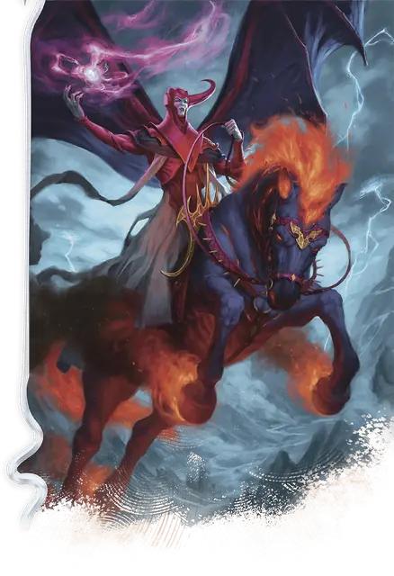

Венгер
Venger
Среднее Исчадие, Нейтральное Злое, именной НИП

Класс Защиты 19 Инициатива +17 (27)
Хиты 202 (27к8 + 81)
Скорость 30 футов, Полёта 30 футов
| мод | спас | ||
|---|---|---|---|
| СИЛ | 18 | +4 | +4 |
| ЛОВ | 20 | +5 | +5 |
| ТЕЛ | 16 | +3 | +9 |
| мод | спас | ||
|---|---|---|---|
| ИНТ | 17 | +3 | +3 |
| МДР | 14 | +2 | +8 |
| ХАР | 21 | +5 | +5 |
Сопротивление урону Огонь, Холод, Электричество, Яд
Иммунитеты Отравленный
Чувства Тёмное зрение 120 футов (игнорирует магическую Тьму), пассивное Восприятие 18
Языки Общий, Бездны, Инфернальный
Опасность 17 (18 000 опыта; БВ +6)
Особенности
Восстановление исчадия. Когда Венгер умирает, его тело рассыпается багровой пылью и спустя 1к10 дней возрождается со всеми Хитами в одном из его логов.
Легендарное сопротивление (3/день, или 4/день в Логове). Если Венгер проваливает спасбросок, он вместо этого может в нём преуспеть.
Сопротивление магии. Венгер совершает с Преимуществом спасброски от заклинаний и прочих магических эффектов.
Умелый наездник. Пока Венгер находится верхом, он и его скакун совершают с Преимуществом спасброски Ловкости, а Венгер может перенаправить на себя атаку, нацеленную на его скакуна. Венгер не может использовать эту особенность, если Недееспособен.
Действия
Мультиатака. Венгер совершает три атаки Багровыми когтями или Багровым разрядом в любой комбинации.
Багровые когти. Бросок рукопашной атаки: +11, досягаемость 5 фт. Попадание: 14 (2к8 + 5) Рубящего урона плюс 10 (3к6) урона Огнём.
Багровый разряд. Бросок дальнобойной атаки: +11, дистанция 120 фт. Попадание: 24 (3к12 + 5) Силового урона.
Сотворение заклинаний. Венгер сотворяет одно из следующих заклинаний (заклинательная характеристика — Харизма, Сл спасброска заклинаний 19):
Неограниченно: Безмолвный образ, Волшебная рука, Невидимость, Обнаружение магии
2/день каждое: Переносящая дверь, Связь с иным планом, Смена обличья, Сотворение нежити
1/день каждое: Власть над погодой, Заточение
Бонусные действия
Телекинез (2/день). Венгер сотворяет Телекинез (заклинательная характеристика — та же, что для Сотворения заклинаний).
Реакции
Защитная магия. Венгер сотворяет Контрзаклинание или Щит в ответ на условие этих заклинания (заклинательная характеристика — та же, что для Сотворения заклинаний).
Легендарные действия
У этого существа есть 3 использования Легендарных действий (или 4 использования в его Логове); оно может немедленно после окончания хода другого существа потратить одно использование, чтобы совершить одно из следующих действий. Существо восполняет все потраченные использования в начале каждого своего хода.
Багровый удар. Венгер совершает одну атаку Багровыми когтями или Багровым разрядом.
Громогласное порицание. Спасбросок Мудрости: Сл 19, одно видимое Венгером существо в пределах 60 футов. Провал: 14 (4к6) Психического урона, и цель Испугана до конца своего следующего хода. Успех: Только половина урона.
Цепи сковывания магов. Спасбросок Ловкости: Сл 19, одно видимое Венгером существо в пределах 30 футов. Провал: Цель Опутана до конца своего следующего хода. Опутанная цель не может совершать действие Магия. Провал или успех: Венгер не может совершить это действие снова до начала своего следующего хода.
Бонус мастерства +6